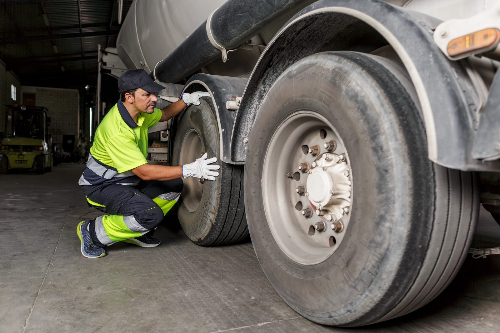

Home / Blog / Hot Final Inspection
PROCESS GUIDETRIB describes the final inspection as the step that keeps substandard retreads from leaving the plant. Why it happens while the tire is still hot, and what an in-house line should build around it.
Published October 8, 2026 · Good Hope Retreaders

Most of what makes a retread good happens earlier in the process: casing inspection, buffing, skiving, building, and curing. But the last thing that happens before a retread leaves the plant is the one step that checks the finished product. The Tire Retread & Repair Information Bureau (TRIB) describes it as the point that “insures that only tires that meet industry quality standards are allowed to leave the retread plant.”
For a fleet that is considering running its own retread line, this step deserves a closer look. It is also the step where an in-house operation has a structural advantage: the people who built the tire can see exactly how it came out of the chamber.
TRIB’s published description of the retread process says final inspection is done on the tire right after curing, and gives the reason: flaws in the liner, the casing and the repairs are clearly visible while the tire is hot. A tire that has cooled and sat on a rack hides some of what a warm one shows.
The practical consequence is about layout and workflow. If the inspection station sits at the end of the line, away from the chamber, or the tires queue for hours before anyone looks at them, you give up the window TRIB describes. An in-house line can put the inspection station next to chamber unloading from day one, because nobody else is deciding where it goes.
According to TRIB, a retread that passes final inspection is trimmed to remove excess rubber and painted. The retread DOT number is then branded into the sidewall to complete the process. In other words, the brand marks a tire as having cleared the plant’s own quality gate. For the regulatory side of that marking, see our guide to DOT certification for an in-house retread line.
Final inspection is the last chance to catch a problem, but it is not the only protection. Patent literature on retreading envelope systems treats the envelope seal as a process risk in its own right: an envelope leak that goes undetected can leave the new tread without a proper bond to the casing. The same literature describes checking envelope pressure before the assembly is loaded, because a pressure drop signals a leak that must be repaired before curing. A leak that develops before the chamber reaches cure pressure is described as particularly damaging.
The takeaway is simple. Inspection after cure confirms what the curing step produced; envelope integrity checks before cure help prevent the problem in the first place. We cover the equipment side in our guide to curing envelope vacuum integrity.
This is reasoning rather than data, and we want to be clear about that. When a fleet depends on an outside retreader, the final inspection happens somewhere else, on someone else’s schedule, and the fleet typically sees only the result. When the line is in-house, three things change:
None of this requires a particular equipment brand or a supplier’s program. It requires a defined inspection point, trained inspectors, and a habit of feeding findings back into the process. Our article on single-supplier lock-in versus running your own line looks at the wider economics of that independence.
Related reading: the pre-cure checks start with the casing inspection, and the cost of a casing that fails late is covered in our piece on casing salvage rate as an in-house KPI.
We supply retreading machinery, curing chambers, consumables and repair tools from our Ontario warehouse, with transparent all-in Canadian pricing and local service. Tell us your tire sizes and volume and we will help you spec the line.
Request a quote →Send us your requirements and we'll get back to you within 24 hours with pricing and lead times — no obligation.